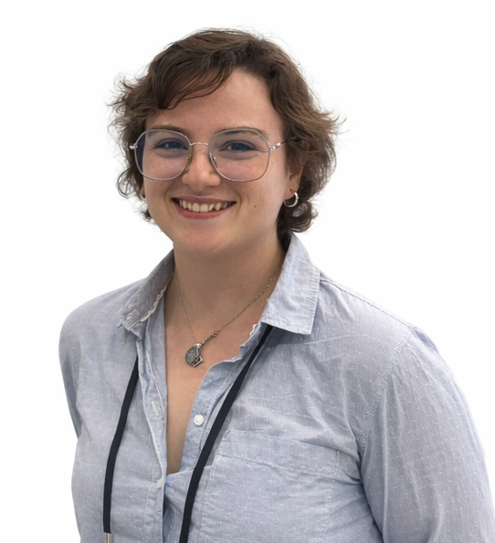

PhD Researcher · Uppsala University · Sweden
Computational biologist developing dry lab methods to study metabolic diseases through a multi-omic approach — exploring the relationship between DNA methylation and genomic stability.
My PhD project investigates in the context of metabolic diseases
the role of genomic stability and epigenetic modifications
in a childhood obesity model — an emergent reality in many
countries.
Working in the Guerrero-Bosagna Lab at the Department
of Organismal Biology, I develop computational pipelines and apply
integrative omics approaches to study how the methylome interacts
with genetic architecture across generations and environments.
★ Featured Projects
GBS-MeDIP is a cost-effective method combining genotyping-by-sequencing and methylated DNA immunoprecipitation — but its unique output makes conventional pipelines inadequate. This project developed a novel method and benchmarked it against state-of-the-art statistical approaches for count data — EdgeR, DESeq2, limma and Mann-Whitney.
📄 Submitted to Env. EpigeneticsThe mechanisms by which early-life metabolic disease alter genome stability remain largely unknown. This project investigates the relationship between genomic variation and DNA methylation changes in a childhood obesity mouse model, using reduced representation to examine whether epigenetic marks at specific loci precede or accompany the appearance of genetic variants across generations.
Other Projects
A reproducible, end-to-end Nextflow pipeline for processing and analysing raw GBS-MeDIP sequencing data, from quality control to differential methylation output.
NextflowThis article highlights the importance of data integration in big data studies through a multi-omic framework combining epigenomic and metagenomic data in the context of multigenerational exposure to metabolic challenges.
R/Python/LinuxIntegration of metagenomic data derived from a multigenerational exposure to early-life metabolic diseases in C57BL/6 mice.
Python/LinuxCharacterisation of epigenetic signals from mitochondrial DNA employing nanopore sequencing technologies.
Nanopore/Python/LinuxTeaching resource for the Uppsala University joint Toxicology course: a step-by-step lab guide for toxicokinetics.
RBioinformatician with 6 years of experience in NGS technology in genetics, epigenetics, and metagenomics, including nanopore sequencing. Extensive experience with developing pipelines for new wet-lab methods, including implementation in Nextflow. Experience working with multi-modal data, especially epigenetics and genomics for data integration. Coordination of international projects as well as organization of seminars and extensive experience with presentation in national and international context. Motivated by collaboration of different stakeholders to expand scientific knowledge.
Beyond the terminal, I am committed to open science and the advancement of society — all code underpinning my publications is publicly available here on GitHub.
Physiology & Environmental Toxicology
Stockholm University · Human population studies employing aDNA
Image analysis of fossil fungi · First-author publication in Deposits Magazine
Universidad Autónoma de Madrid · Antibiotic resistance studies for clinical contexts